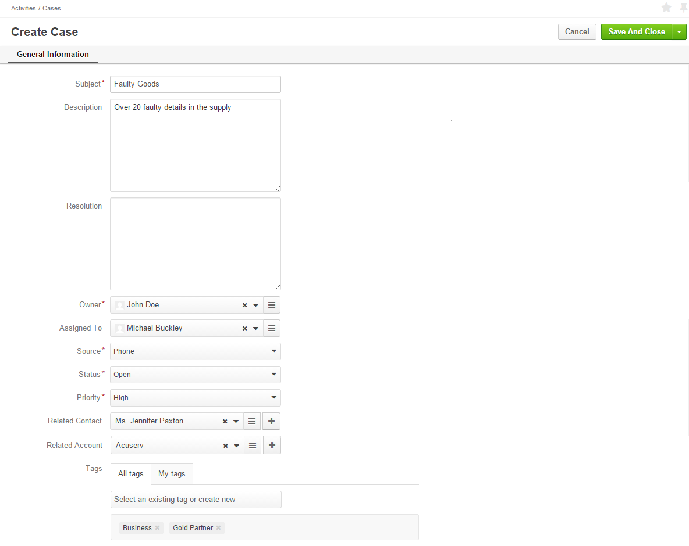

In order to keep the details of a certain issue, problem or failures reported by the customers, define their priority and the person responsible for handling them, use the Create Case action.
Cases can be created from the Cases grid:
| Name | Description |
|---|---|
| Subject* | The case title. Must be defined. |
| Description | A free text tab. Contains the problem description. May be left empty. |
| Resolution | A free text tab. Contains the problem resolution details. May be left empty. |
| Owner* | Limits the list of users that can manage the case (view, edit) to users, whose roles allow managing cases assigned to the owner (e.g. the owner, owner’s managers, colleagues, etc.). By default is set to the user filing the case. To clear the field, click the x button. You can choose another owner from the list. |
| Assigned To | Defines the user, who shall resolve the issue. The field may be left empty. |
| Source* | Defines how you have received information about the issue. The possible options are:
The field is by default filled with the Other option. |
| Status* | Defines the current status of the case processing. The possible options are:
The field is by default filled with the Open option. |
| Priority* | Defines the task priority. The possible options are:
The field is by default set to the Normal option. |
| Related Contact | Defines a contact record related to the case, if any. The field may be left empty. |
| Related Account | Defines an account record related to the case, if any. The field may be left empty. |
| Tags | Defines tags for the case. Click the Select and existing tag or create new button and either choose a tag from the drop-down menu or enter a new tag. Any number of tags may be added. |
For example, the company has received a phone call from a manager of the Acuserv company saying that some of the details in the previous supply were faulty. The head of the purchasing department in Acuserv is Jennifer Paxton (a related contact). We’ve assigned the issue to Michael Buckley from the Marketing department and defined its priority as high. We’ve added the Business and Gold Partner tags for this case.
Note
The tasks can also be mapped to the Zendesk account.